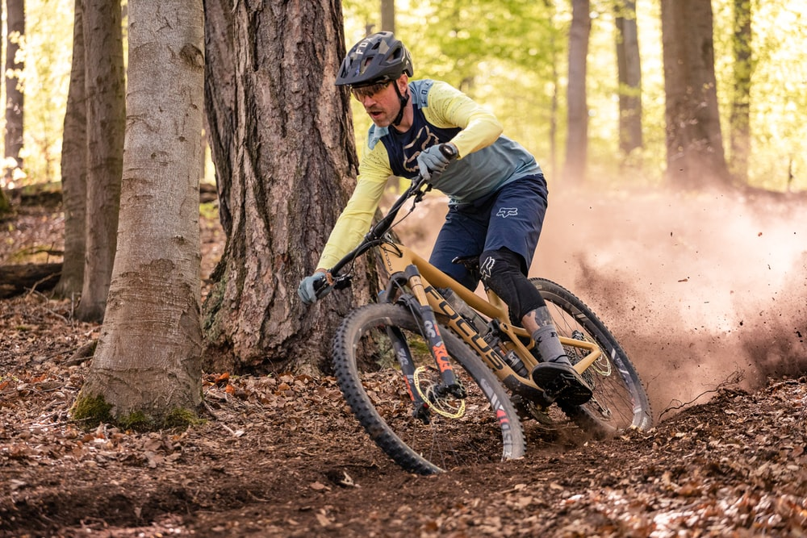
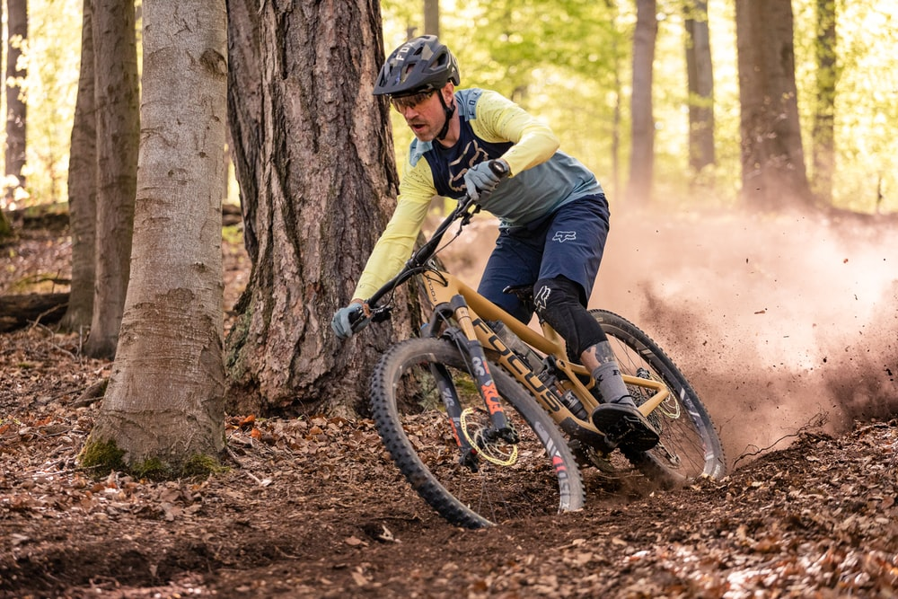
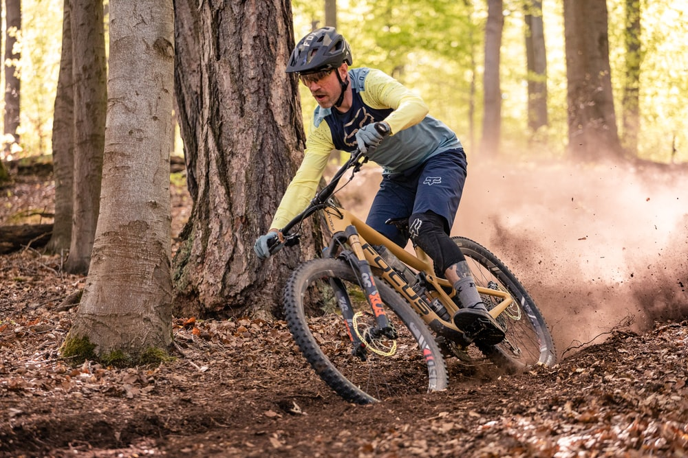

We are the Riverside Mountain Bike Club and welcome members from all over the southern California region. We meet twice a month to go on 5 mi rides that are fun for the whole family.

If you’re new to mountain biking—or simply cycling in general—you’ve probably already been bombarded by a huge lexicons of terms that make absolutely no sense to you. It seems like cyclists speak an entirely unique dialect of English, especially mountain bikers. One minute your new riding buddies sound like surfer dude transplants from southern California, the next they go all geeky on you and start throwing out a slew of mechanical and technical terms about bikes.